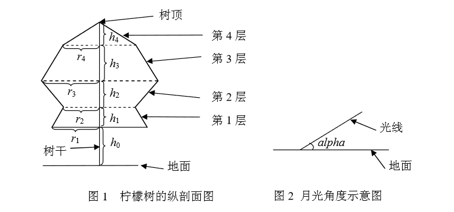
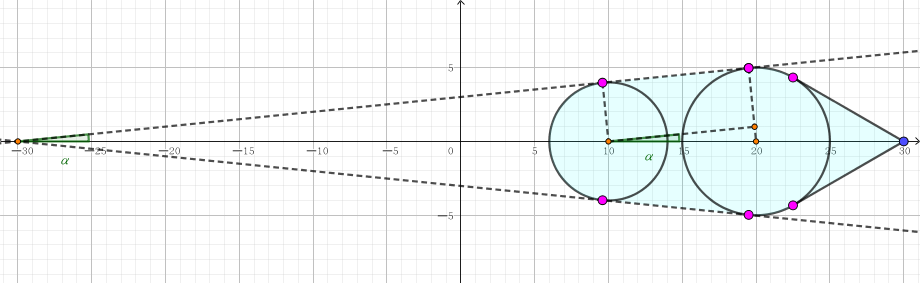

李哲非常非常喜欢柠檬树，特别是在静静的夜晚，当天空中有一弯明月温柔地照亮地面上的景物时，他必会悠闲地坐在他亲手植下的那棵柠檬树旁，独自思 索着人生的哲理。
李哲是一个喜爱思考的孩子，当他看到在月光的照射下柠檬树投在地面上的影子是如此的清晰，马上想到了一个问题：树影的面积是多大呢？
李哲知道，直接测量面积是很难的，他想用几何的方法算，因为他对这棵柠檬树的形状了解得非常清楚，而且想好了简化的方法。
李哲将整棵柠檬树分成了 $n$ 层，由下向上依次将层编号为 $1, 2, \cdots, n$。从第 $1$ 到 $n - 1$ 层，每层都是一个圆台型，第 $n$ 层 (最上面一层) 是圆锥型。
对于圆台型，其上下底面都是水平的圆。对于相邻的两个圆台，上层的下底面和下层的上底面重合。第 $n$ 层 (最上面一层) 圆锥的底面就是第 $n - 1$ 层圆台的上底面。所有的底面的圆心 (包括树顶) 处在同一条与地面垂直的直线上。
李哲知道每一层的高度为 $h_1, h_2, \cdots, h_n$，第 $1$ 层圆台的下底面距地面的高度为 $h_0$，以及每层的下底面的圆的半径 $r_1, r_2, \cdots, r_n$。李哲用熟知的方法测出了月亮的光线与地面的夹角为 $\alpha$。
为了便于计算，假设月亮的光线是平行光，且地面是水平的，在计算时忽略树干所产生的影子。李哲当然会算了，但是他希望你也来练练手。
第一行包含一个正整数 $n$ ($n \leq 500$) 和一个实数 $\alpha$ ($0.3 < \alpha < \dfrac \pi 2$)，表示柠檬树的层数和月亮的光线与地面夹角 (单位为弧度 $\mathrm{rad}$)。
第二行包含 $n + 1$ 个实数 $h_0, h_1, h_2, \cdots, h_n$ ($0 < h_i \leq 100$)，表示树离地的高度和每层的高度。
第三行包含 $n$ 个实数 $r_1, r_2, \cdots, r_n$ ($0 < r_i \leq 100$)，表示柠檬树每层下底面的圆的半径。
输出一行一个实数，表示树影的面积。四舍五入保留两位小数。
先来看一下最终的投影的形状是怎么样的。
不妨设树干为 $z$ 轴，光线平行于 $xOz$ 平面。对于高度为 $h$，半径为 $r$ 的圆 (i.e. $\left( r \cos \theta, r \sin \theta, h \right), 0 \leq \theta < 2 \pi$)，它的投影应该是这样一个圆：
它的圆心坐标为 $\left( h \cot \alpha, 0, 0 \right)$。
它的半径为仍然为 $r$。
于是我们可以在 $O(n)$ 的时间内得到所有圆对应的投影 (树顶可以看作半径为 $0$ 的退化的圆)。
我们考虑相邻两个圆构成的圆台，观察它投影的形状。
注意到圆台中每个截面所截得的圆的半径与高度呈线性关系，因此投影后的圆系中半径与横坐标也是呈线性关系的。
即存在 $k, b$ 使得对于每个圆，有 $r = k x_0 + b$。
因此 $(x, y)$ 在影子中当且仅当 $\left( x - x_0 \right)^2 + y^2 \leq \left( k x_0 + b \right)^2$。
即 $y^2 \leq \left( \left( k x_0 + b \right)^2 - \left( x - x_0 \right)^2 \right)_\max = \dfrac {\left( k x + b \right)^2} {1 - k^2}$。
也就是说，这个轨迹的边界是一段直线，且就是这两圆的外公切线。也就是说，整个投影的形状是两圆和外公切线的所包围的部分 (下图中浅蓝色区域)。当然，如果这两圆是内含 (含内切) 关系，则轨迹就是大圆。
于是，现在我们的任务就是，对于相邻的两圆，求出外公切线。
由于这两个圆的圆心都在 $x$ 轴，因此做起来会相对简单一些。
如上图所示，可以发现两个绿色的角是相等的 (即为 $\alpha$)，由右边的直角三角形，可知 $\sin \alpha = \dfrac {r_2 - r_1} {x_2 - x_1}$ (其中 $x$ 为圆心横坐标，$r$ 为半径)，于是就可以得到四个切点的坐标。
又注意到整个图形的面积是关于 $x$ 轴对称的，因此我们只需计算 $x$ 轴上方的图形面积，最后再 $\times 2$ 即可。
而 $x$ 轴上方的图形面积，可以看作是某一个奇怪的函数与 $x$ 轴所夹部分的面积 (即一个定积分)，由函数的不规则性，可使用 Simpson 积分解决。
Simpson 中对于每个 $x$ 坐标，求函数值 $f(x)$ 的过程也不难，只需枚举每个圆和每条直线，分别取纵坐标的 $\max$ 即可。
在 Simpson 中注意常数，避免对一个 $x$ 坐标多次求值。
时间复杂度就是 $O \left( - n \log eps \right)$。
#include <bits/stdc++.h>
#define N 510
const double eps = 1e-8, third = 1.0 / 3.0, sixth = 1.0 / 6.0;
#define lt(x, y) ((x) < (y) - eps)
#define gt(x, y) ((x) > (y) + eps)
#define le(x, y) ((x) <= (y) + eps)
#define ge(x, y) ((x) >= (y) - eps)
#define eq(x, y) (le(x, y) && ge(x, y))
#define dot(x, y, z) (((y) - (x)) * ((z) - (x)))
#define cross(x, y, z) (((y) - (x)) ^ ((z) - (x)))
struct vec2 {
double x, y;
vec2 (double x0 = 0.0, double y0 = 0.0) : x(x0), y(y0) {}
vec2 * read() {scanf("%lf%lf", &x, &y); return this;}
inline vec2 operator - () const {return vec2(-x, -y);}
inline vec2 operator + (const vec2 &B) const {return vec2(x + B.x, y + B.y);}
inline vec2 operator - (const vec2 &B) const {return vec2(x - B.x, y - B.y);}
inline vec2 operator * (double k) const {return vec2(x * k, y * k);}
inline vec2 operator / (double k) const {return *this * (1.0 / k);}
inline double operator * (const vec2 &B) const {return x * B.x + y * B.y;}
inline double operator ^ (const vec2 &B) const {return x * B.y - y * B.x;}
inline double norm2() const {return x * x + y * y;}
inline double norm() const {return sqrt(x * x + y * y);}
inline bool operator < (const vec2 &B) const {return lt(x, B.x) || le(x, B.x) && lt(y, B.y);}
inline bool operator == (const vec2 &B) const {return eq(x, B.x) && eq(y, B.y);}
inline bool operator << (const vec2 &B) const {return lt(y, 0) ^ lt(B.y, 0) ? lt(B.y, 0) : gt(*this ^ B, 0) || ge(*this ^ B, 0) && ge(x, 0) && lt(B.x, 0);}
inline vec2 trans(double a11, double a12, double a21, double a22) const {return vec2(x * a11 + y * a12, x * a21 + y * a22);}
} t[N][2];
int n;
double h[N], r[N];
inline void up(double &x, const double y) {x < y ? x = y : 0.;}
inline void down(double &x, const double y) {x > y ? x = y : 0.;}
void tangent(double x1, double r1, double x2, double r2, vec2 *ret) {
double Sin = (r2 - r1) / (x2 - x1), Cos = sqrt(1.0 - Sin * Sin);
ret[0] = vec2(x1 - r1 * Sin, r1 * Cos), ret[1] = vec2(x2 - r2 * Sin, r2 * Cos);
}
double f(double x) {
int i; double ret = 0.0, g;
for (i = 0; i < n; ++i)
if (ge(x, t[i][0].x) && le(x, t[i][1].x))
up(ret, ((t[i][0] ^ t[i][1]) + x * (t[i][0].y - t[i][1].y)) / (t[i][0].x - t[i][1].x));
for (i = 0; i <= n; ++i)
if ((g = r[i] * r[i] - (x - h[i]) * (x - h[i])) > 0)
up(ret, sqrt(g));
return ret;
}
double Simpson(double L, double M, double R, double fL, double fM, double fR, double eps) {
double LM = (L + M) * 0.5, fLM = f(LM), MR = (M + R) * 0.5, fMR = f(MR);
double A = (fL + fM * 4.0 + fR) * (R - L) * sixth,
AL = (fL + fLM * 4.0 + fM) * (M - L) * sixth,
AR = (fM + fMR * 4.0 + fR) * (R - M) * sixth;
if (fabs(AL + AR - A) < eps) return (2.0 * (AL + AR) + A) * third;
return Simpson(L, LM, M, fL, fLM, fM, eps * 0.6) + Simpson(M, MR, R, fM, fMR, fR, eps * 0.6);
}
int main() {
int i; double s = 0.0, L = INFINITY, M, R = -INFINITY, a;
scanf("%d%lf", &n, &a); a = 1.0 / tan(a);
for (i = 0; i <= n; ++i) scanf("%lf", &L), h[i] = (s += L) * a;
for (i = 0; i <= n; ++i)
i == n ? (r[i] = 0.0, 0) : scanf("%lf", r + i), down(L, h[i] - r[i]), up(R, h[i] + r[i]);
for (i = 0; i < n; ++i) tangent(h[i], r[i], h[i + 1], r[i + 1], t[i]);
M = (L + R) * 0.5;
printf("%.2lf\n", Simpson(L, M, R, f(L), f(M), f(R), eps * 8.0) * 2.0);
return 0;
}
坑1：注意圆和线、圆和圆不相交的情形，避免负数开方变成 nan。